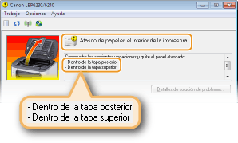
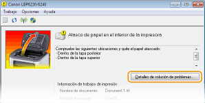
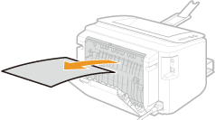
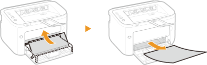
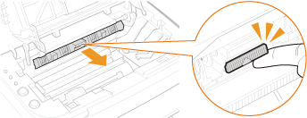
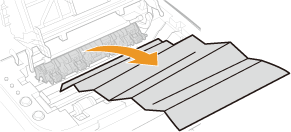
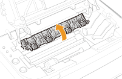
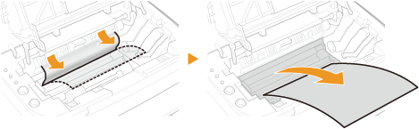

0KXF-03E
Si se produce un atasco de papel, el indicador  (Alarma) parpadea y en la Ventana Estado de la impresora aparece el mensaje <Atasco de papel en el interior de la impresora> junto con los lugares donde se han producido los atascos. Saque el papel atascado de los distintos lugares en el orden que se le indica siguiendo los procedimientos que se describen en las secciones siguientes. Antes de hacerlo, lea detenidamente las instrucciones de seguridad de Instrucciones de seguridad importantes.
(Alarma) parpadea y en la Ventana Estado de la impresora aparece el mensaje <Atasco de papel en el interior de la impresora> junto con los lugares donde se han producido los atascos. Saque el papel atascado de los distintos lugares en el orden que se le indica siguiendo los procedimientos que se describen en las secciones siguientes. Antes de hacerlo, lea detenidamente las instrucciones de seguridad de Instrucciones de seguridad importantes.
(Alarma) parpadea y en la Ventana Estado de la impresora aparece el mensaje <Atasco de papel en el interior de la impresora> junto con los lugares donde se han producido los atascos. Saque el papel atascado de los distintos lugares en el orden que se le indica siguiendo los procedimientos que se describen en las secciones siguientes. Antes de hacerlo, lea detenidamente las instrucciones de seguridad de Instrucciones de seguridad importantes.
<Dentro de la tapa posterior>
<Dentro de la tapa superior>
|
|
|
Cuando elimine el atasco de papel, no apague el equipo
Si apaga el equipo, se eliminarán los datos que se están imprimiendo.
Si el papel se rompe
Quite todos los fragmentos de papel para evitar que se atasquen.
Si el papel se atasca una vez tras otra
Coloque el montón de papel sobre una superficie plana para igualar los lados del papel antes de cargarlo en el equipo.
Compruebe que el papel sea el adecuado para el equipo. Papel
Compruebe que no hayan quedado en el equipo fragmentos de papel atascados.
Si utiliza papel con una superficie áspera, establezca [Tipo de papel] en [Rugoso 1] (de 16,0 a 23,9 lb Bond [de 60 a 90 g/m²]) o [Rugoso 2] (24,0 lb Bond a 60,3 lb Cover [de 91 a 163 g/m²]). Operaciones básicas de impresión
No saque el papel atascado del equipo a la fuerza
Si quita el papel a la fuerza, puede dañar piezas del equipo. Si no puede quitar el papel, póngase en contacto con su distribuidor de Canon local autorizado o con el centro de ayuda de Canon. Cuando no puede solucionarse un problema
|
 |
|
Si hace clic en [Detalles de solución de problemas], podrá ver los mismos métodos para solucionar problemas que se describen en este manual.
 |
Si el papel atascado no sale fácilmente, no intente extraerlo a la fuerza. Utilice el procedimiento en otro lugar donde el mensaje le indique que hay otro atasco.
1
Abra la tapa posterior.

2
Extraiga suavemente el papel.

3
Cierre la tapa posterior.
»
Continúe con Atascos de papel dentro de la tapa superior
Si el papel atascado no sale fácilmente, no intente extraerlo a la fuerza. Proceda al paso siguiente.
1
Extraiga suavemente el papel.
|
|
Bandeja de salida
 |
|
Ranura de alimentación manual
 |
|
|
Bandeja multiuso
Pliegue la tapa de la bandeja y, a continuación, extraiga el papel. Si hay papel cargado en la bandeja multiuso, retírelo antes de eliminar los atascos de papel.
 |
||
2
Cierre la bandeja auxiliar y, a continuación, abra la tapa superior.

3
Saque el cartucho de tóner.

4
Compruebe si hay papel atascado dentro de la guía de salida del papel.
|
1
|
Abra la guía de salida del papel.
Pulse sin soltar el botón verde y, a continuación, tire hacia usted de la guía de salida del papel.
 |
|
2
|
Extraiga suavemente el papel.
 |
|
3
|
Cierre la guía de salida del papel.
Asegúrese de que tanto el lado derecho como el izquierdo de la guía están bien cerrados.
 |
5
Extraiga suavemente el papel.
Sujete el papel por ambos lados, tire hacia abajo del lado delantero y extráigalo.

6
Sustituya el cartucho de tóner.

7
Cierre la tapa superior.
|
El mensaje de atasco de papel desaparece, y el equipo está preparado para imprimir.
|